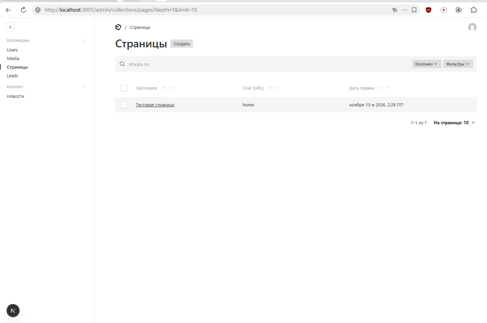
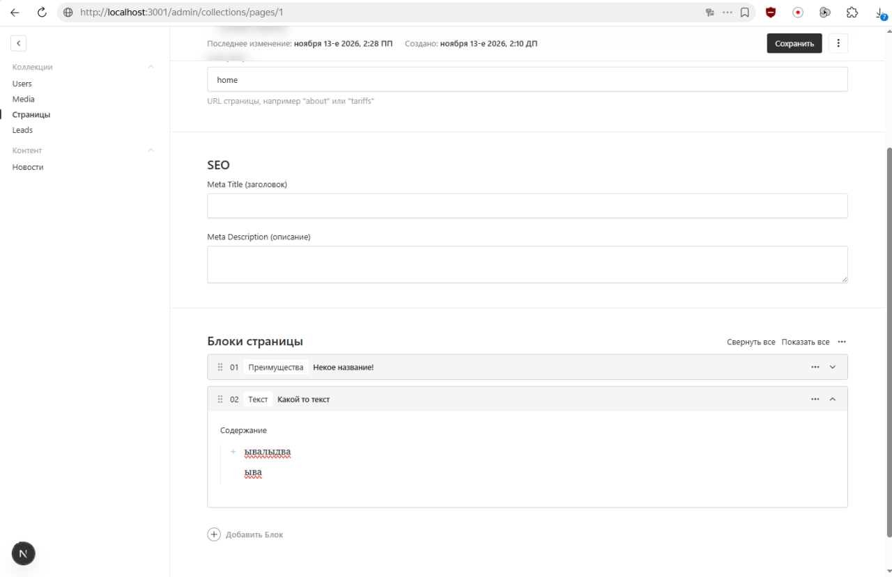
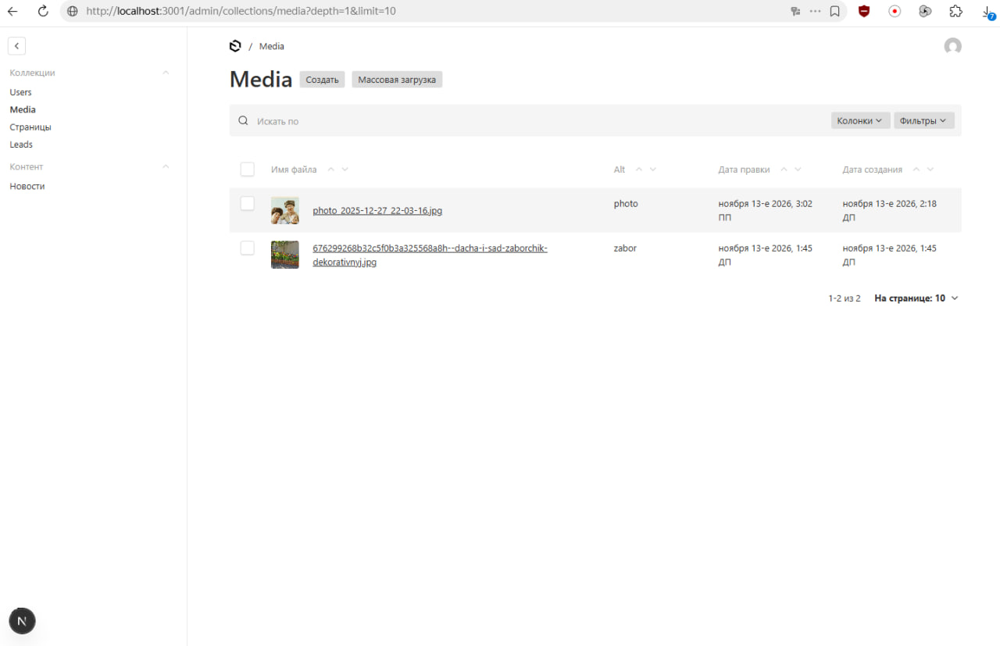
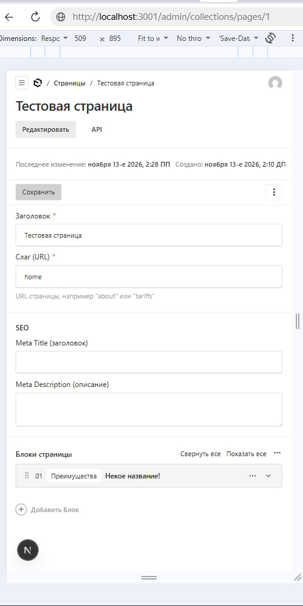

Прописали схему данных в TypeScript — получили полноценную админку с CRUD, валидацией, ролями, версионированием, поиском, загрузкой файлов и drag-n-drop блоками. Без единой строки UI-кода.
В Yii2 админка — это ваш код: CRUD-контроллеры, формы, валидация, загрузка файлов, роли, поиск, фильтры. Каждая новая сущность — часы работы.
В Payload админка — это следствие схемы. Описали поля в TypeScript (10–30 строк) — получили готовый интерфейс. Ваш код — только то, что действительно уникально.
Каждый блок — отдельный файл. Группировка по смыслу. Pages.ts — короткий и читаемый, не растёт с каждым блоком.
src/
├── blocks/
│ ├── content/
│ │ ├── Hero.ts ← блок Hero
│ │ ├── Text.ts ← блок Text
│ │ ├── Features.ts ← блок Features
│ │ └── index.ts ← экспорт ContentBlocks[]
│ └── index.ts ← AllBlocks[] (объединяет все группы)
└── collections/
└── Pages.ts ← только схема страницы + импорт AllBlocksНовый файл в группе + строка в index.ts. Pages.ts не трогаем.
ContentBlocks можно взять в Landings, Tariffs — без дублирования.
Вот весь код блока Hero. Прописали поля — Payload сгенерирует форму в админке.
import type { Block } from 'payload'
export const HeroBlock: Block = {
slug: 'hero',
labels: {
singular: { en: 'Hero', ru: 'Hero (баннер)' },
plural: { en: 'Hero', ru: 'Hero (баннеры)' },
},
fields: [
{ name: 'heading', type: 'text', required: true, label: 'Заголовок' },
{ name: 'subheading', type: 'textarea', label: 'Подзаголовок' },
{ name: 'image', type: 'upload', relationTo: 'media', label: 'Изображение' },
{
name: 'cta',
type: 'group',
label: 'Кнопка',
fields: [
{ name: 'label', type: 'text', label: 'Текст кнопки' },
{ name: 'url', type: 'text', label: 'Ссылка (URL)' },
],
},
],
}20 строк кода → в админке: текстовое поле, textarea, загрузка картинки, группа «Кнопка» с двумя полями, валидация «Заголовок обязателен». Всё — автоматически.
Колонки (Заголовок, Слаг, Обновлено), поиск, фильтры, пагинация, сортировка, кнопка «Создать», действия с записями — всё есть. Настраивается одной строкой: defaultColumns: ['title', 'slug', 'updatedAt'].

Скриншот: админка → Pages → список страниц.
Поле type: 'blocks' — это drag-n-drop конструктор. Добавили блок — выбрали тип из списка (Hero, Text, Features) — заполнили поля. Меняете порядок — перетаскиваете. Свернуть/развернуть блок — кнопка.

Скриншот: админка → Pages → редактирование страницы «О нас».Менять порядок блоков мышкой
Не загромождать форму
«Заголовок обязателен» — из required: true
Коллекция Media — это загрузка файлов из коробки: drag-n-drop, превью, кроп, ресайз (sharp), alt-текст, папки. Поле type: 'upload', relationTo: 'media' — и в любом блоке можно выбрать картинку из медиатеки или загрузить новую.

Скриншот: админка → Media → список файлов (сетка превью).Это то, что в Yii2 пришлось бы писать руками (или ставить мёртвые расширения). В Payload — из коробки, поддерживается, обновляется.
Логин, сессии, JWT, восстановление пароля, роли (admin/editor), access control на коллекции и поля — из коробки.
История изменений, откат к версии, черновики (draft/published), автосохранение — одной опцией versions: { drafts: true }.
Поиск по полям, фильтры по значениям, сортировка, пагинация — в списках коллекций автоматически.
Русский язык админки — i18n: { supportedLanguages: { ru } }. Переводы полей — label: { en, ru }.
Медиатека, drag-n-drop, кроп, ресайз (sharp), alt-текст, папки, S3/local — из коробки.
Relationship (один-к-одному, один-ко-многим), upload, join — декларативно, с UI выбора в админке.
beforeChange/afterChange, кастомная валидация, вычисляемые поля — на TypeScript, без магии.
Свой React-компонент вместо стандартного «загрузчика» — пикер из API, карта, виджет. Полная свобода.
| Задача | Yii2 (сейчас) | Payload |
|---|---|---|
| Новая сущность (CRUD) | Контроллер + модель + формы + валидация + view (часы) | Описание полей (10–30 строк) |
| Загрузка файлов | Плагин/расширение (мёртвое), настройка, поддержка | type: 'upload' |
| Роли и доступ | RBAC + настройка + проверки в каждом контроллере | access: { read: () => true } |
| Версионирование | Плагин или самопис (сложно) | versions: { drafts: true } |
| Блочный конструктор | Самопис: модели, рендер, админка, drag-n-drop | type: 'blocks' |
| Локализация админки | Вручную (переводы, подключение) | i18n: { ru } |
| Кастомное поле | Виджет + JS + интеграция с формой (сложно) | React-компонент (штатно) |
| Поддержка и обновления | Вы сами (мёртвые расширения, PHP 8.4) | Команда Payload + сообщество |
Админка Payload работает на телефоне и планшете без отдельной вёрстки. Редактировать новость с телефона — реально.

Скриншот: админка на мобильном (или в DevTools mobile view).